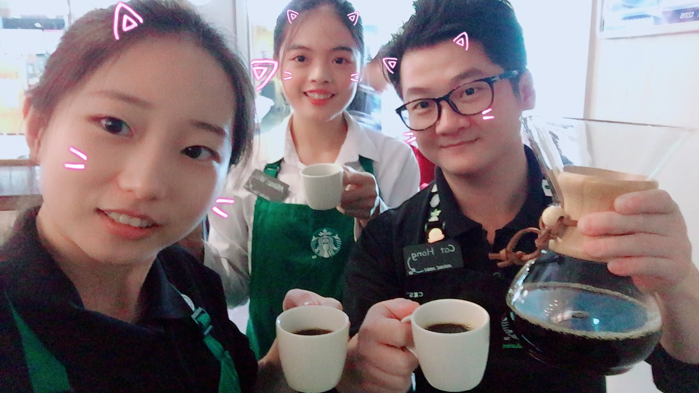
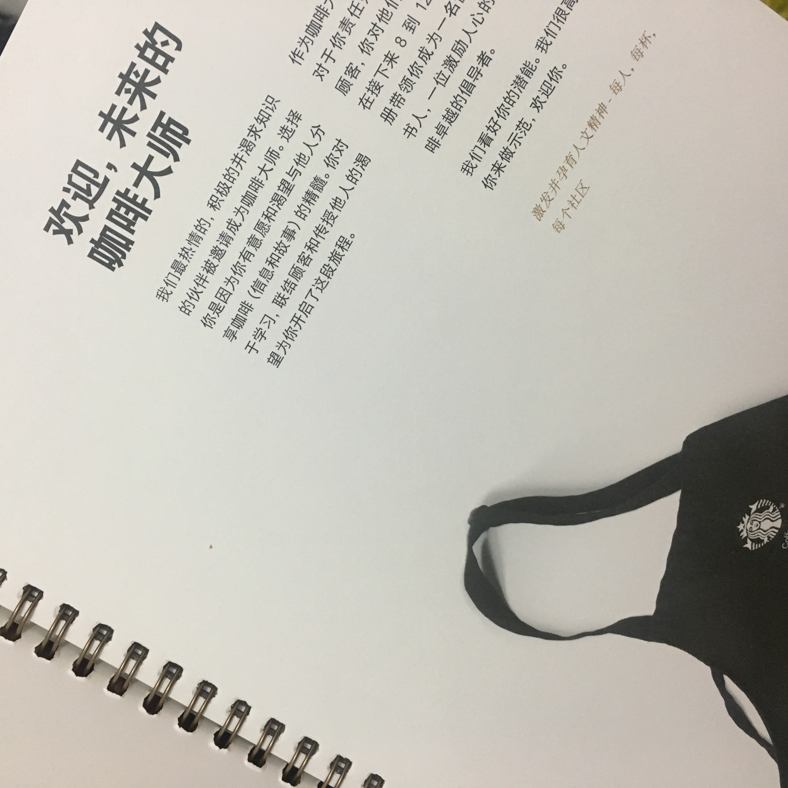
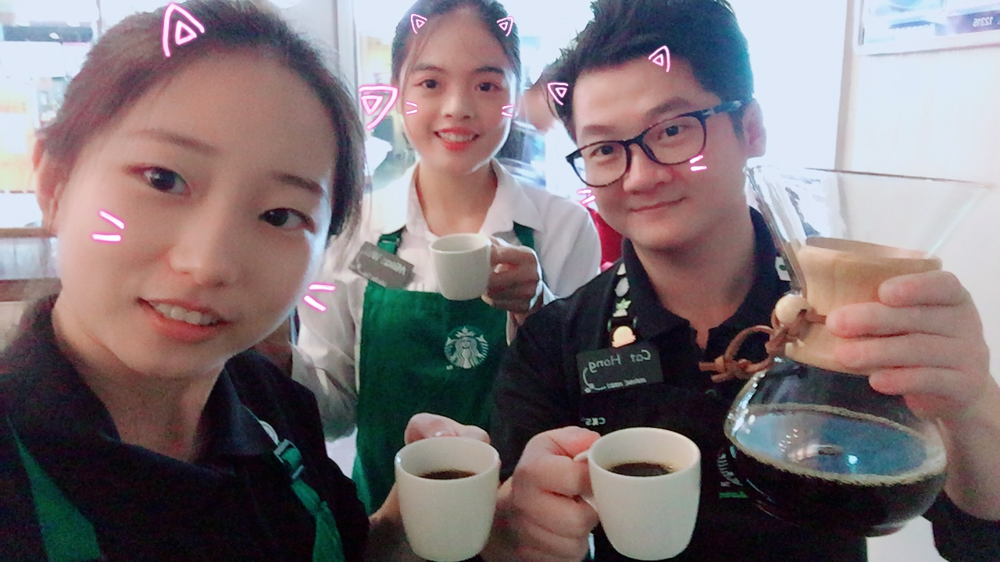
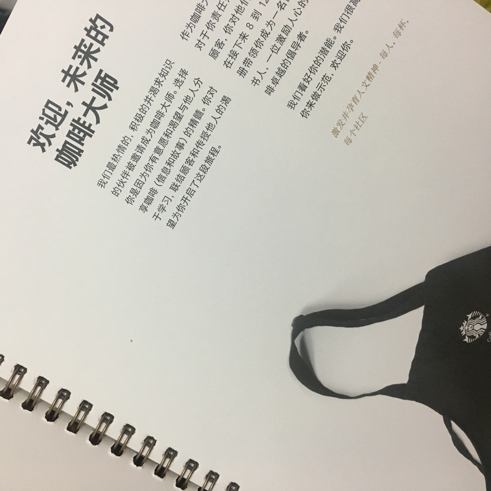

咖啡与我
By Misan on Jan 18, 2018
第一次在圣诞节与熟客群体分享我们的圣诞节咖啡豆，通过活动希望大家能够更深入的了解咖啡的文化，能够细细品味每杯咖啡不同的风味
兼职之于的tasting，学习了云南综合咖啡豆，这是星巴克第一款来自中国的豆子，哈哈哈哈有着亚太地区豆子独特草木芳香
学习了一年多到临近毕业又临近离职的时间了，给了自己一个小目标，更深入的了解咖啡，从星级咖啡师走向咖啡大师，圆梦咖啡大师

第一次在圣诞节与熟客群体分享我们的圣诞节咖啡豆，通过活动希望大家能够更深入的了解咖啡的文化，能够细细品味每杯咖啡不同的风味
兼职之于的tasting，学习了云南综合咖啡豆，这是星巴克第一款来自中国的豆子，哈哈哈哈有着亚太地区豆子独特草木芳香
学习了一年多到临近毕业又临近离职的时间了，给了自己一个小目标，更深入的了解咖啡，从星级咖啡师走向咖啡大师，圆梦咖啡大师
